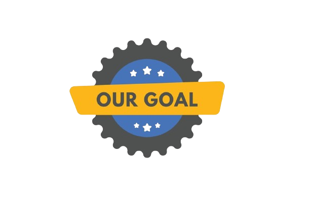

At Harsh Steel And Services, we pride ourselves on being leaders in the metal and steel trading industry.
With years of experience and a deep understanding of the market dynamics, we have carved a niche for
ourselves by delivering unparalleled expertise and top-notch services to our clients.
What sets us apart:
- Comprehensive Product Range: We offer a diverse range of metal and steel products,
catering to various industrial needs. From raw materials to finished goods,
we source and supply high-quality materials that meet stringent quality standards.
- Customized Solutions: Understanding that each client's requirements are unique,
we provide tailor-made solutions that address specific needs. Whether it's sourcing
rare alloys or fulfilling bulk orders on short notice, we have the flexibility and agility to
adapt to diverse challenges.
- Commitment to Quality: Quality is non-negotiable for us. We adhere to rigorous quality
control processes at every stage of the trading process,
ensuring that our clients receive products that meet or exceed their expectations.
- Industry Expertise: Backed by a team of industry experts and market analysts, we provide valuable insights
and strategic guidance to help our clients make informed decisions in a rapidly evolving market landscape.

At Harsh Steel And Services, our goals are not just aspirations; they are the guiding principles that define our journey
towards excellence in the metal and steel trading industry. As a dynamic and forward-thinking company,
we are committed to achieving the following objectives:
- Customer-Centric Approach: Our customers are our most valuable asset, and their satisfaction is paramount.
We are committed to fostering long-term partnerships based on trust, transparency, and mutual respect. Our goal is not just
to meet but to exceed our clients' expectations by consistently delivering exceptional service and unparalleled quality.
- Corporate Responsibility: We recognize our responsibility towards the communities we serve and the society
at large. As a socially responsible corporate citizen, we are committed to giving back through philanthropic initiatives,
community engagement, and ethical business practices that uphold the highest standards of integrity and fairness.
- Customized Solutions: Understanding that each client's requirements are unique, we provide tailor-made solutions that
address specific needs. Whether it's sourcing rare alloys or fulfilling bulk orders on short notice, we have the flexibility and agility
to adapt to diverse challenges.
By steadfastly pursuing these goals, Harsh Steel And Services aims to not only achieve success but also make a positive impact on the world around us.
Join us on this journey as we strive to redefine the future of metal and steel trading, one goal at a time.